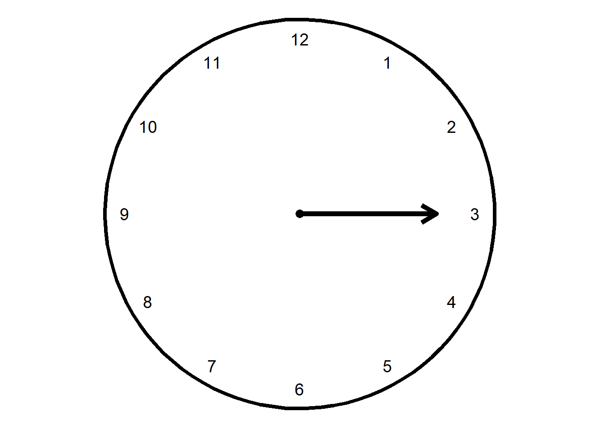
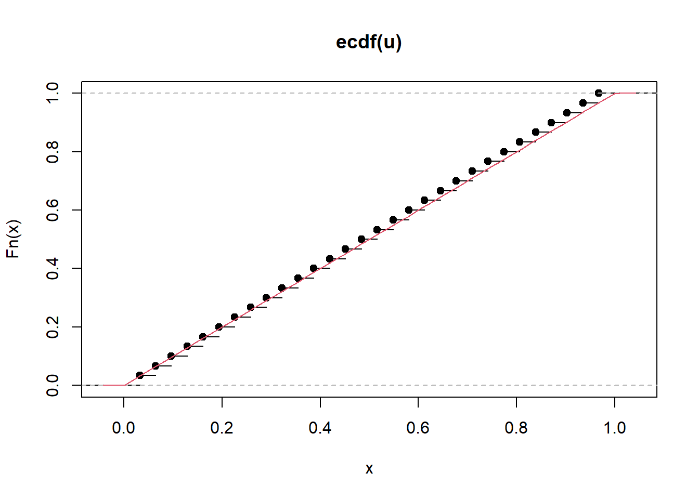
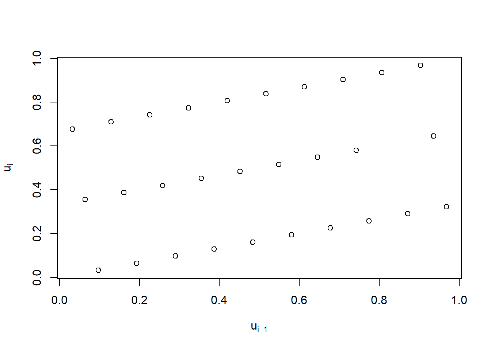
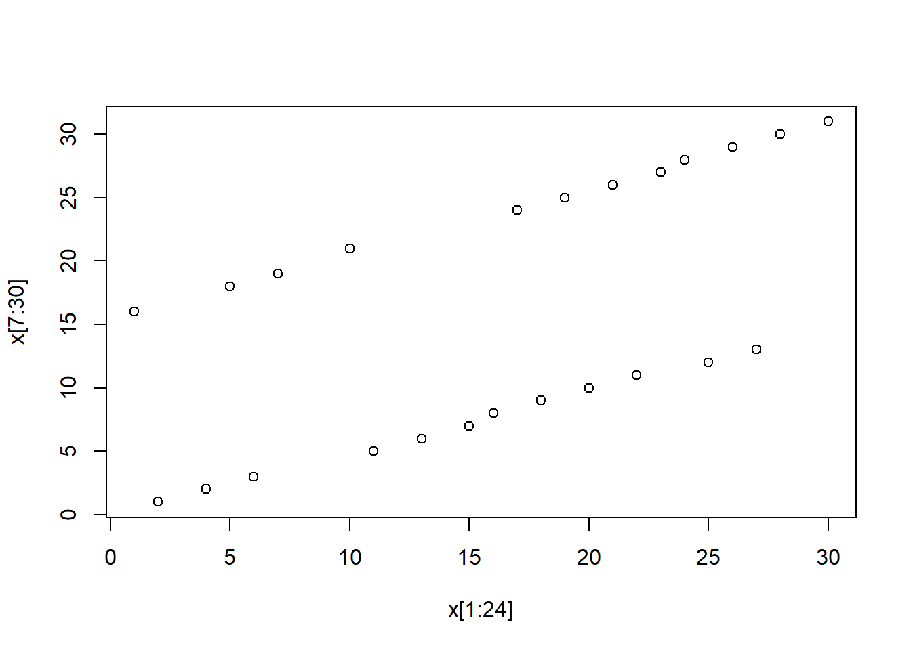

Warning: pacote 'ggplot2' foi compilado no R versão 4.5.1

A noção de gerar números aleatórios é antiga, sendo que sua função primordial era o sorteio, com o intuito religioso ou por lazer.
No começo do século XX, geradores de números aleatórios simples, baseados em sorteios, foram utilizados para a seleção de amostras e desenhos de experimentos. Contudo, para problemas mais complexos, envolvendo o sorteio de uma coleção muito grande de números, a utilização de dados, moedas ou urnas não eram uma opção viável. Uma solução inicial foi a produção de tabelas contendo números aleatórios. Tippet (1927) produziu uma tabela com 41.600 números aleatórios selecionados do censo de 1925. Fisher e Yates (1943) produziram uma tabela de números aleatórios selecionados de uma tabela de logaritmos. Kermack e Kendrick (1937) criaram uma tabela de números aleatórios baseada em um diretório de números telefônicos.
Por volta dos anos 50, a simulação era necessária para o uso no Método de Monte Carlo (um meio de calcular integrais). Agora, milhares de números aleatórios eram necessários. Em 1955, a RAND Corporation produziu suas tabelas de números aleatórios, com milhões de dígitos, produzidos por um processo físico (uma fonte de pulso de frequência aleatória).
Atualmente, os números aleatórios (ou melhor, pseudo-aleatório, como veremos a seguir) são gerados por computadores com objetivos diversos como
Estudos de simulação em processos estocásticos
Lidar com expressões matemáticas analiticamente intratáveis
Estudos de processos físicos e biológicos
Criptografia
Computadores digitais não são capazes de gerar números aleatórios. Em vez disso, eles se utilizam de uma sequência de números \(x_{i-1},\ldots,x_{i-k}\) para gerar o número \(x_i\), isto é,
\[x_i=f(x_{i-1},\ldots,x_{i-k}).\] Acima, a função \(f(.)\) é denominada gerador e \(k\) é a ordem do gerador. Os valores iniciais da sequência são denominados semente. Pela natureza determinística do gerador, todas as sequências geradas com a mesma semente são iguais. Um bom gerador faz com que não seja fácil determinar qual será o novo valor baseado nos anteriores.
Como um computador só pode representar um número finito de números, é certo que a sequência se repetirá em algum momento. O comprimento da sequência do início até a repetição é denominado período.
Ao longo destas notas de aula, o termo “aleatório” será utilizado no lugar “pseudo-aleatório”. Os termos gerador de simulador de números aleatórios são sinônimos.
Nosso objetivo inicial é construir um simulador que gere sequências que se parecem com uma amostra de variáveis aleatórias independentes de uma Uniforme(0,1). Na prática, os simuladores de números pseudo-aleatórios geram uma sequência de números inteiros \(x_1,x_2,\ldots\) não repetidos onde cada inteiro é não nulo e menor que um inteiro \(m\). A aproximação para Uniforme(0,1) é feita escalando a sequência gerada para o intervalo (0,1), ou seja, fazendo \(x_1/m,\ldots,x_p/m\)
Existem duas técnicas básicas para gerar números pseudo-aleatórios:
Métodos congruenciais
Métodos de registro de mudança de feedback
Vamos explorar as principais ideias por trás destes geradores. Para tanto, é fundamental alguns resultados de artimética modular.
É importante ressaltar que os dois métodos citados acima são baseados na aritmética modular - um sistema aritmético para inteiros onde os números retrocedem ao atingir um valor denominado módulo. Um exemplo familiar desta aritmética é o relógio de ponteiro, no qual a contagem volta ao início após o ponteiro chegar em 12h (neste caso, o módulo é 12). A relação básica desta aritmética é a congruência módulo, definida abaixo.
Definition 4.2
Seja \(m\) um inteiro positivo. Dois números inteiros \(a\) e \(b\) são congruentes módulo \(m\) se sua diferença é um inteiro divisível por \(m\). Utilizamos a notação \(a\equiv b \pmod m\) (lê-se \(a\) é congruente a \(b\) módulo \(m\).A congruência módulo pode ser entendida facilmente com a analogia com o relógio de ponteiros. Por exemplo, a Figure 4.1 apresenta um relógio apontando para o 3. Se for de madrugada, a interpretação será de que são 3h. Em caso contrário serão 15h. Portanto, 15h é equivalente a 3h nesse relógio, ou ainda, 15 é congruente a 3 módulo 12. Para mostrar esse fato, basta notar que
\[\frac{15-3}{12}=\frac{12}{12}=1,\] e, como o resultado da divisão acima é um inteiro, temos a referida congruência.
Warning: pacote 'ggplot2' foi compilado no R versão 4.5.1Exercício 1. Encontre quatro números que são congruentes a 2 módulo 5.
A congruência módulo é simétrica, reflexiva e transitiva, como mostra a seguinte proposição
Propriedades 1.
\(a\equiv b \pmod m \Rightarrow b\equiv a\pmod m\) (simétrica)
\(a \equiv a \pmod m\) \(\forall \;a\) (reflexiva)
\(a\equiv b\pmod m\) e \(b\equiv c\pmod m\Rightarrow\) \(a\equiv c\pmod m\) (transitiva)
Além das propriedades acima, podemos apresentar as seguintes operações.
Propriedades 2.
\((a+b) \pmod m = a\pmod m + b\pmod m\)
\((ab) \pmod m = (a\pmod m)(b\pmod m)\)
A redução modular \(b\pmod m\) é definida como o resto da divisão euclidiana de \(b\) por \(m\), sendo o seu resultado denominado resíduo. Relembre que, para a divisão de \(b\) por \(m\), temos que \[b=qm+r\] onde \(q\) é o quociente inteiro e \(r\) o resto, que satisfaz \(0\leq r < m\). Exemplos:
\[\frac{b}{m}=\frac{10}{5}=2\Rightarrow b=2m+0,\] logo, o resíduo é 0.
\[\frac{b}{m}=\frac{15}{10}=\frac{10}{10}+\frac{5}{10}=1+\frac{5}{10}\Rightarrow b=m+5,\] o resíduo é 5.
\[\frac{b}{m}=\frac{5}{10}=0+\frac{5}{10}\Rightarrow b=0.m+5\] o resíduo é 5.
Importante. A redução modular \(b\pmod m\) é dada por \[b-\lfloor b/m\rfloor m, \] onde \(\lfloor.\rfloor\) é o maior interio menor ou igual ao argumento. No R pode-se calcular \(\lfloor b/m\rfloor\) usando a função b%/%m. Assim, o resíduo pode ser calculado por b- b%/%m *m.
Exercício. Crie um algoritmo para encontrar os resíduos de \(b\mod 31\) com \(b=31,32,\ldots,100\)
Observe que os resíduos são inteiros dentro do conjunto \(\{0,1,\ldots,m-1\}\). Desde que \(b\) não seja múltiplo de \(m\), é correto afirmar que \(0<r<m\), onde \(r\) é o resíduo. Deste modo, teremos
\[0<\frac{r}{m}<1.\] A capacidade de gerar todos os números inteiros entre 0 e \(m-1\) sem repetição será explorada mais adiante para a contrução de um gerador. O próximo teorema será fundamental mais adiante.
Inverso multiplicativo modular. Existe um inteiro \(b\) tal que \(ab\equiv 1\pmod m\) se e somente se o máximo divisor comum entre \(a\) e \(m\) é 1 (ou seja, \(a\) e \(m\) são primos entre si).
Lehmer (1951) propôs o gerador linear congruencial simples (GLCS), dado por
\[x_i\equiv (ax_{i-1}+b)\pmod m\] onde \(a\) e \(b\) são inteiros denominados multiplicador e incremento. Escolhemos uma semente inicial \(x_0\), com \(0\leq x_0 <m\) (note que não faz sentido ter uma semente maior que \(m\), pois haverá outra menor que será congruente com esta). Como \(x_i\) é um resíduo, sabemos que \(0\leq x_i\leq m-1\), o que implica em \(m\) possibilidades de números. Portanto, esse gerador possui, no máximo, período \(m\).
No exemplo abaixo, o GLCS com semente inicial \(x_0=7\), \(a=5\) e \(b=3\) gerou a seguinte sequência de números.
a = 5
m = 8
b = 3
x = 7
for(i in 2:(m+3)){
y <- (a*x[i-1] + b)
x[i] <- y - m * y%/% m
}
x [1] 7 6 1 0 3 2 5 4 7 6 1Observe que a semente inicial se repetiu na iteração 9, o que implica que esse gerador conseguiu simular todos os 8 números distintos possíveis.
O GLCS tem dentre os seus resultados, a possibilidade de gerar um resíduo igual a 0. Embora isto não seja um problema para o gerador em si, essa característica é indesejável, pois nosso objetivo é obter \[\frac{r_i}{m}\in(0,1)\] logo, o gerador não pode simular o valor \(r_i=0\).
Ao fazer \(b=0\), temos o gerador congruencial multiplicativo (GCM). Desde que \(0<x_0<m\), o GCM não vai gerar o número 0 se \(m\) for primo, uma vez que \(ax_{i-1}\) nunca será múltiplo de \(m\). Deste modo, o GCM pode gerar os números no conjunto \(\{1,\ldots,m-1\}\) tendo, portanto, período máximo igual a \(m-1\).
Exemplo 1 Considere o GCM com \(m=31\) (primo) e \(a=7\), com \(x_0=19\). Abaixo mostramos os 30 valores gerados:
# criando um vetor semente igual a 19
semente <- 19
x <- semente
# criando o multiplicador e o módulo
a <- 7
m <- 31
# gerando os números pseudo-aleatórios
for(i in 2:m){
y <- a * x[i-1]
x[i] <- y - y%/%m * m
}
# resultado
(amostra <- x[-1]) [1] 9 1 7 18 2 14 5 4 28 10 8 25 20 16 19 9 1 7 18 2 14 5 4 28 10
[26] 8 25 20 16 19# período
which(amostra == semente)[1] 15 30Embora o período máximo seja 30, esse gerador tem período 15.
O exemplo acima mostra que ter \(m\) primo não é suficiente para obter o período máximo. Vamos avaliar melhor essa questão. Note que \(x_k \equiv ax_{k-1}\pmod m\) implica que existe \(c\) inteiro tal que \((x_k-ax_{k-1})/m = c\). Disto, temos que:
\[\begin{align}c&= \frac{x_k - ax_{k-1}}{m}=\frac{x_k \pm a^2 x_{k-2}- ax_{k-1}}{m}=\frac{x_{k}-a^2 x_{k-2} -a(x_{k-1}-a x_{k-2})}{m}\\ &=\frac{x_k-a^2 x_{k-2}}{m}+a\frac{x_{k-1}-ax_{k-2}}{m}\end{align}\]
e, como \(x_{k-1}\) e \(ax_{k-2}\) são congruentes módulo \(m\), existe um inteiro \(c'\) tal que
\[\begin{align}c&= \frac{x_k-a^2 x_{k-2}}{m}+ak_2\Rightarrow \frac{x_k-a^2 x_{k-2}}{m}=c-ac'\end{align}\] e, como \(c-ac'\) é inteiro, temos que \[x_k\equiv a^2 x_{k-2} \pmod m.\] Podemos fazer uma indução e mostrar que $x_k a^k x_0m $. Em geral, os geradores de números pseudo-aleatórios corretamente implementados devem começar a se repetir na semenente inicial. Deste modo, um gerador com período \(k\) deve ter \(x_k=x_0\), o que implica em
\[x_0\equiv a^kx_0\pmod m \Rightarrow a^kx_0=x_0\pmod m.\] Disto, podemos enunciar a seguinte proposição.
Para um GCM, se \(x_0\) e \(m\) são primos entre si, então o menor valor de \(k\) que satisfaz \[a^k\equiv 1\pmod m\] é o periodo do GCM.
A demonstração da proposição se dá pela existência de \(x_0^{-1}\), garantida pelo Teorema do Inverso Modular. \[a^k x_0 x_0^{-1 }\equiv x_0 x_0^{-1}\pmod m\Rightarrow a^k\equiv 1\pmod m.\]
Exemplo 1 Considere novamente o GCM com \(m=31\) (primo) e \(a=7\), com \(x_0=19\). Como \(m\) e \(a\) são números primos, seu máximo divisor comum será 1. Portanto, o período deste gerador satisfaz
\[{7}^k\equiv 1\pmod {31}.\]
A função abaixo testa os inteiros \(1,2\ldots\) até encontrar o período. Conforme o esperado,o período é igual a 15.
parar <- FALSE
k <- 1
while( parar == FALSE){
teste = ( (7^k - 1)/31 )
if( teste == ceiling(teste) ){
parar <- TRUE
}else{
k <- k+1
}
}
k[1] 15Vimos até o momento que, se \(m\) é um número primo e o máximo divisor comum entre \(m\) e \(x_0\) é um, então, o período \(k\) do GCM é o menor inteiro positivo que satisfaz
\[a^k\equiv 1\pmod m.\] Portanto, é importante entender em quais condições \(k=m-1\). Considere a seguinte definição.
Definition 4.1 Um inteiro \(a\) é uma raiz primitiva módulo \(m\) se todas as potências \(a^1,a^2,\ldots,a^{m-1}\) módulo \(m\) geram o conjunto \(1,\ldots,m-1\).
Não há uma fórmula específica para encontrar raízes primitivas. Contudo, existem algoritmos para esse tipo de busca. No R a função primroot do pacote numbers encontra essas raízes por força bruta (ou seja, os inteiros entre 1 e \(m-1\) são testados um de cada vez). A vantagem das raízes primitivas é dada no seguinte teorema.
Theorem 4.1 Considere um GCM onde \(m\) é um número primo e o máximo divisor comum entre \(x_0\) e \(m\) é 1. Se \(a\) é uma raiz primitiva módulo \(m\), então o período do GCM é \(m-1\).
Exemplo 2 Considere o Exemplo 1 novamente, onde \(m=31\) (primo) e \(x_0=19\) ( mdc(31,19)=1). Vamos encontrar as raízes primitivas módulo 31:
numbers::primroot(31, all = T)[1] 3 11 12 13 17 21 22 24Note que no Exemplo 1 utilizamos \(a=7\), que não é raíz primitiva de 31. Por isso o período encontrado foi menor que 30. Como há 8 raízes primitivas neste problema, qualquer uma delas pode, em princípio, ser utilizada como valor para \(a\). Abaixo ilustramos o gerador com \(a=3\).
# criando um vetor semente igual a 19
semente <- 19
x <- semente
# criando o multiplicador e o módulo
a <- 3
m <- 31
# gerando os números pseudo-aleatórios
for(i in 2:(m) ){
y <- a * x[i-1]
x[i] <- y - y%/%m * m
}
# resultado
(amostra <- x[-1]) [1] 26 16 17 20 29 25 13 8 24 10 30 28 22 4 12 5 15 14 11 2 6 18 23 7 21
[26] 1 3 9 27 19# período
which(amostra == semente)[1] 30Exercício. Considerando o número primo 1021, crie um gerador congruencial multiplicativo para gerar uma amostra de tamanho 1000 da Uniforme(0,1). Em seguida:
Faça o gráfico da distribuição empírica desta amostra (utilize o comando plot(ecdf(x)), onde x é a amostra gerada).
Faça o gráfico da função de distribuição da Uniforme(0,1) em cima do gráfico anterior (utilize o comando curve(punif(x), add = T)).
Teste \(H_0: X\sim\hbox{Uniforme}(0,1)\) com o comando ks.test(x,'punif')
Qual é a sua conclusão sobre o seu gerador?
O exercício anterior mostra algumas estatísticas que são favoráveis ao gerador. Contudo, um bom gerador deve ter sucesso em uma grande bateria de testes para ser considerado adequado, mas este não é o escopo destas notas. O exercício abaixo ilustra um erro comum em um GMC.
Exemplo 3.(O padrão reticular) Considere a seguinte amostra, de tamanho 30, do GCM criado no Exemplo 2.
(u <- amostra / m) [1] 0.83870968 0.51612903 0.54838710 0.64516129 0.93548387 0.80645161
[7] 0.41935484 0.25806452 0.77419355 0.32258065 0.96774194 0.90322581
[13] 0.70967742 0.12903226 0.38709677 0.16129032 0.48387097 0.45161290
[19] 0.35483871 0.06451613 0.19354839 0.58064516 0.74193548 0.22580645
[25] 0.67741935 0.03225806 0.09677419 0.29032258 0.87096774 0.61290323Notemos que
plot(ecdf(u))
curve(punif(x), add = T, col =2)
o que é consistente com uma Uniforme(0,1). O teste de Kolmogorov-Smirnov chega a mesma conclusão:
ks.test(u, 'punif')
Exact one-sample Kolmogorov-Smirnov test
data: u
D = 0.032258, p-value = 1
alternative hypothesis: two-sidedVamos então mostrar o gráfico de dispersão de \((u_i,u_{i-1})\)
plot( u[-1],u[-30], xlab = expression(u[i-1]) ,ylab=expression(u[i]) )
Este tipo de padrão, denominado reticular, não deve aparecer em uma amostra aleatória de uma Uniforme(0,1).
Um bit (contração de binary digit) a unidade básica da computação, podendo estar em dois estados: 0 ou 1. Ao agrupar bits, podemos representar diversas informações. Por exemplo, com 8 bits, teremos \(2^8=256\) combinações distintas, o que é suficiente para representar todos os caracteres de um teclado (letras, números, símbolos), um pixel de uma imagem em escala de cinza, ou um número de 0 a 255.
A transformação de um número binário em um número na base 10 pela soma do resultado da multiplicação do bit pelo seu valor posicional. Por exemplo, um número com 4 bits possui os valores posicionais: \(2^3, 2^2,2^1,2^0\). Deste modo, o número 1100 em binário representa o número
\[(1\times 2^3)+(1\times 2^2)+(0\times 2^1)+(0\times 2^0)=8+4+0+0=12.\]
Tausworthe (1965) introduziu um gerador baseado em uma sequências de zeros e uns gerados por recorrência da forma
\[b_i\equiv (a_pb_{i-p}+a_{p-1}b_{i-p+1}+\cdots+a_1b_{i-1})\pmod 2\] onde \(b_i\) são bits. Como \(b_i\in\{0,1\}\) e 2 é primo, desde que a semente inicial não seja composta somente de zeros, é possível mostrar que o período deste gerador é dado por \(2^{p}-1.\) Por eficiência, a maioria dos coeficientes \(a_j\) do gerador acima são nulos. Consdire o caso particular
\[b_i\equiv (b_{i-p}+b_{i-p+q})\pmod 2,\] com \(0<q<p\). Observe que:
\[\frac{b_i-b_{i-p}-b_{i-p+q}}{2}=\frac{b_i}{2}\] seja inteira, é necessário que \(b_i=0\).
\[\frac{b_i-b_{i-p}-b_{i-p+q}}{2}=\frac{b_i-1}{2}\] seja inteira, é necessário que \(b_i=1\). O mesmo vale para \(b_{i-p}=0\) e \(b_{i-p+q}=1\).
\[\frac{b_i-b_{i-p}-b_{i-p+q}}{2}=\frac{b_i-2}{2}\] seja inteira, é necessário que \(b_i=0\).
Deste modo, a operação \(b_i\equiv (b_{i-p}+b_{i-p+q})\) é equivalente à operação lógica \(\oplus\) (lê-se “ou exclusivo”), no qual \(b_i=1\) se \(b_{i-p}\neq b_{i-p+q}\) e \(b_i=0\) em caso contrário. Deste modo, o gerador pode ser escrito como
\[b_i=b_{i-p}\oplus b_{i-p+q}.\]
Ao utilizar o gerador acima \(l\) vezes, (\(l\leq p\)), podemos transformar os \(l\) bits gerados em um número na base 10. Se \(l\) é um primo relativo de \(2^{p}-1\), então o período dos grupos de tamanho \(l\) também será \(2^p-1\). O exemplo abaixo ilustra esse fato.
Example 4.1 Considere o gerador \[b_i=b_{i-5}\oplus b_{i-3},\] ou seja, \(p=5\) e \(q=2\). Portanto, o período do gerador é \(2^{5}-1=31\). Considere \(l=5\) (ou seja, um número de 5 bits). Isso implica que podemos gerar os números entre 1 e 31 antes começar a repetição. Considere a semente 10100. Abaixo geramos todas as 31-tuplas possíveis.
b = c(1,0,1,0,0)
p=5 ;q=2
for(i in 6:150 ) b[i] = xor(b[i-p], b[i-p+q])
bs = matrix(b,ncol=5,byrow=T)
bs [,1] [,2] [,3] [,4] [,5]
[1,] 1 0 1 0 0
[2,] 0 0 1 0 0
[3,] 1 0 1 1 0
[4,] 0 1 1 1 1
[5,] 1 0 0 0 1
[6,] 1 0 1 1 1
[7,] 0 1 0 1 0
[8,] 0 0 0 1 0
[9,] 0 1 0 1 1
[10,] 0 0 1 1 1
[11,] 1 1 0 0 0
[12,] 1 1 0 1 1
[13,] 1 0 1 0 1
[14,] 0 0 0 0 1
[15,] 0 0 1 0 1
[16,] 1 0 0 1 1
[17,] 1 1 1 0 0
[18,] 0 1 1 0 1
[19,] 1 1 0 1 0
[20,] 1 0 0 0 0
[21,] 1 0 0 1 0
[22,] 1 1 0 0 1
[23,] 1 1 1 1 0
[24,] 0 0 1 1 0
[25,] 1 1 1 0 1
[26,] 0 1 0 0 0
[27,] 0 1 0 0 1
[28,] 0 1 1 0 0
[29,] 1 1 1 1 1
[30,] 0 0 0 1 1Vamos transformar esses números para a base 10:
x = apply(bs, 1, function(x) strtoi(paste0(x, collapse = ""), base = 2 ))
x [1] 20 4 22 15 17 23 10 2 11 7 24 27 21 1 5 19 28 13 26 16 18 25 30 6 29
[26] 8 9 12 31 3Observe que esse gerador também simula padrões indesejados, como o apresentado a seguir.
plot(x[1:24],x[7:30])
Em princípio, a vantagem deste gerador é computacional, uma vez que a operação \(\oplus\) pode ser realizada diretamente em circuitos digitais. Além disso, toda a operação pode ser realizada com um registrador de deslocamento com alimentação, que estão entre as operações mais rápidas de um chip. Para entender esse conceito, considere um estado inicial de 5 bits:
\[[1,0,1,0,0]\] e o gerador \(b_i=b_{i-5}\oplus b_{i-3}\). A regra de realimentação será: o novo bit é o resultado do \(\oplus\) entre o bit que sai (o primeiro da esquerda) e o \(3^o\) bit do registrador.
Passo 1: Deslocamento para a esquerda: O bit 1 (primeiro da esquerda sai e o resto do registrador é deslocado, deixando um espaço vazio na direita. Esse é o estado após deslocamento: \([0, 1, 0, 0, \hbox{vazio}]\)
Passo 2: Operação de Realimentação (\(\oplus\)): Pegamos o bit que saiu (1) e o \(3^o\) bit do estado original (1) e aplicamos o \(\oplus\). Teremos \(1\oplus 1=0\)
Passo 3: Inserção do novo bit. O resultado da operação é inserido no espaço vazio à direita (nesse caso um 0). O novo estado do registrador: \([0, 1, 0, 0, 0]\)
Para evitar os padrões que surgem nos GRDR, Matsumoto and Kurita (1992, 1994) propuseram uma modificação, multiplicando \(b_{i-p+q}\) por uma matriz \(A\), de modo que
\[b_i=b_{i-p}\oplus A b_{i-p+q}.\] Tal gerador foi denominado twisted GSFR generator (algo como GRDR com torção).O objetivo de \(A\) é evitar que ocorram os padrões já discutidos, dando mais uniformidade para as amostras geradas. A matriz \(A\) é escolhida de modo que a operação \(Ab_{i-p+q}\) uma sequência de deslocamentos e \(\oplus\), quebrando padrões possíveis correlações.
Esse gerador é a base para o Mersenne Twister, desenvolvido em 1997 por Makoto Matsumoto e Takuji Nishimura. Seu nome é devido ao módulo utilizado, \(2^{19937}-1\), um conhecido número primo de Mersenne. Esse é o gerador utilizado pelo R por padrão, embora existam outros métodos de geração de números pseudo-aleatórios implementados (para mais detalhes, digite ?Random no console).
Exercício. Utilize a função runif(5000) para gerar 5000 pontos da distribuição Uniforme(0,1). Para essa amostra:
Calcule a média e a variância amostral e compare com os valores esperados para a Uniforme(0,1).
Compare a função de distribuição empírica com a função de distribuição Uniforme(0,1)
Faça o teste Kolmogorov-Smirnov para testar se a amostra é proveniente da Uniforme(0,1).
Faça o gráfico com os pares \((X_1,X_2),(X_2,\ldots,X_3),\ldots,(X_{n-1}, X_n)\).
Exercício 3.
Implemente um gerador congruencial multiplicativo com \(m=2^{13}-1\). Utilize esse gerador para simular uma amostra de tamanho 500 de uma Uniforme(0,1).
Calcule a média e a variância da amostra e compare com os valores esperados para a distribuição Uniforme(0,1).Exercício 5. Por muitos anos o gerador RANDU, dado por \[x_i\equiv 65539x_{i-1}\pmod {2^{31}}\] foi o mais utilizado do mundo. Discuta porque este gerador não deve ser utilizado.
Tábuas de números aleatórios
Tippet (1927). “Random number tables” tracts of computer, No.-15, Cambridge University press.
Fisher, R. A., and F. Yates. “Statistical tables for biological, agricultural and medical research.” Statistical tables for biological, agricultural and medical research. 2nd rev. ed (1943).
Gerador congruencial simples
Lehmer, D. H. (1951), Mathematical methods in large-scale computing units, Proceedings of the Second Symposium on Large Scale Digital Computing Machinery, Harvard University Press, Cambridge, Massachusetts. 141–146.